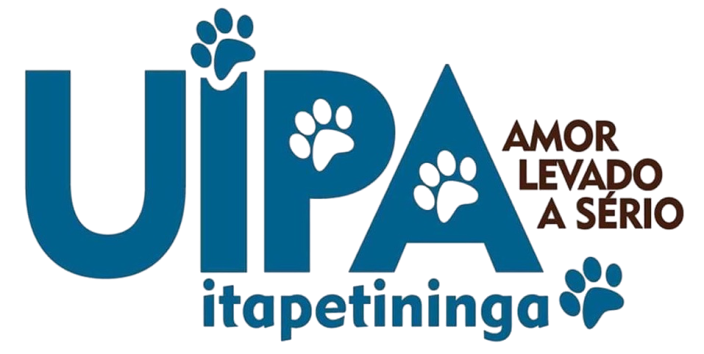
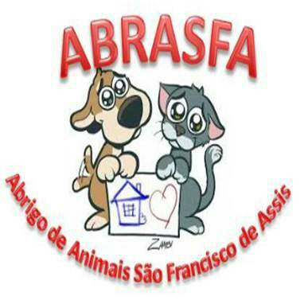

UIPA

A UIPA significa União internacional protetora dos animais, a UIPA é uma
das ONGS mais antigas do Brasil, fundada em 1895.
Foi responsável pela instituição do movimento de proteção animal no país, no século XIX.
A UIPA luta contra o abandono e crueldade aos animais.
Contribua com cartão de crédito através do PagSeguro.
💰 Entre no site e faça uma doação 💰
Clique aqui e doe
Site oficial
Clique aqui
Instituto Luisa Mell
Fundado em fevereiro de 2015, o Instituto Luisa Mell atua principalmente no resgate
de animais feridos ou em situação de risco, recuperação e adoção.
Mantem um abrigo com cerca de 300 animais, entre cães e gatos, todos resgatados das ruas,
onde eles são protegidos, alimentados e aguardam pela chance de serem adotados.
O Instituto Luisa Mell fica em Ribeirão Pires, na região metropolitana,
em um terreno de 27.000 metros quadrados.
Há centro cirúrgico com atendimento veterinário 24 horas. São necessários cerca de 300.000 reais
por mês para sustentá-lo e são as doações, parcerias e vendas
na loja que tornam esse sonho possível.
💰 Faça sua doação aqui 💰
Para mais informações acesse o site oficial
clicando Aqui
ABRASFA Petrolândia

A ABRASFA é uma união de protetores voluntários desde 2016.
Uma ONG na pequena cidade de petrolândia, onde não recebe muita visibilidade
por justamente ser em uma cidade pouco conhecida.
Infelizmente pela baixa renda, eles não possuem abrigo, contudo, buscam ajudar
os animais em situação de rua com ração e cuidados.
CNPJ 26.111.768/0001-26
Chave PIX:
abrasfa.petrolandia@gmail.com
Redes sociais: